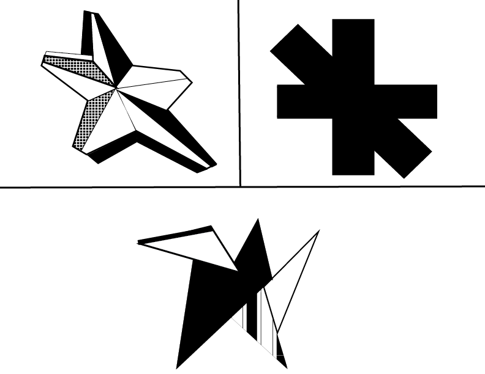
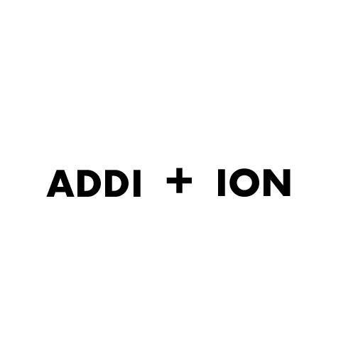
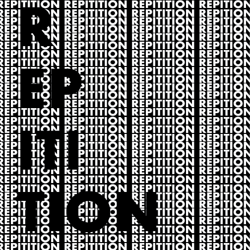
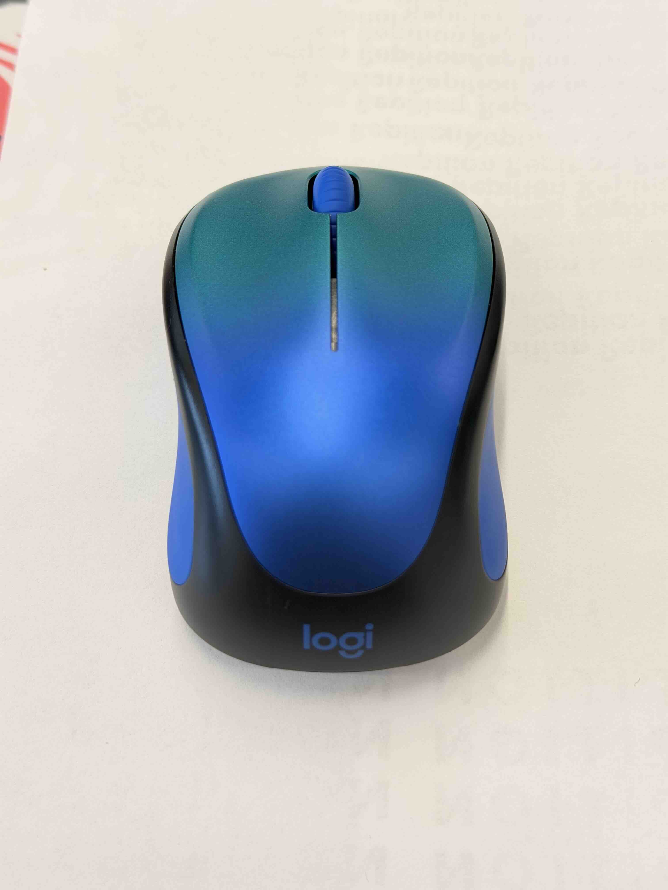
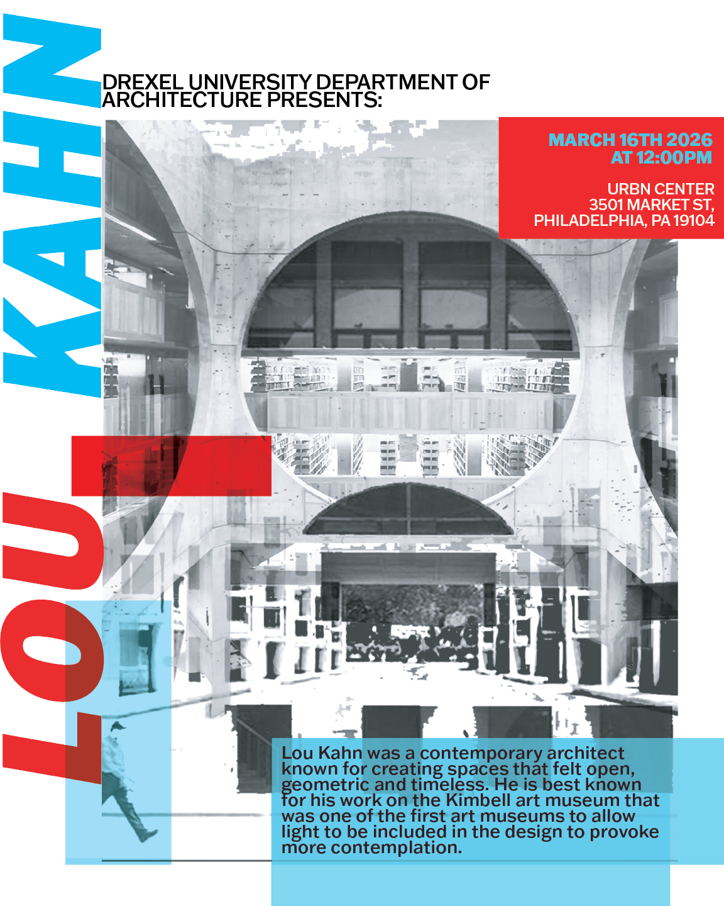

The Sisters of Mercy Research and Redesign
View my Case Study


View my Case Study


Above is a project, in my design class, focusing on Static/Dynamic shapes on Adobe Illustrator. The 3 sections include exact symmetry, asymmetry, and implied balance. The main aspect of the project is was that the shapes have to still look like the shapes, but we were able to distort them. The goal was to make the designs almost look 50/50.


The goal of this project was to create expressive lines that derive from my Initials. On the right 3, the goal was to create backgrounds based off of real life things outdoors. For example on the right the top was a pothole with cracks around it, the one below is the structure below a bridge, and the last one was crates on the sidewalk. Being able to abstract these everyday items was a fun and interesting process, because it caused me to think outside of the box.
This is a design project where we were assigned an adjective and then tried to make a star match that word in abstract ways. My description was "BRUTALIST". I then researched brutalism, what the architecture looks like, and wanted my stars to align with the words "Geometric" "Unfinished" "Heavy" and "Raw"

This point of the project was to create graphics of the meaning of words chosen. The two words I chose were "Repition" "Organization" "Additon"



Goal is to turn an everyday object into an icon


The purpose of this architecture was to create a fake event that would showcase their work. For this poster I overlaid, blended, and masked 3 different buildings of his. Those buildings were

{kind=link}
{kind=link}